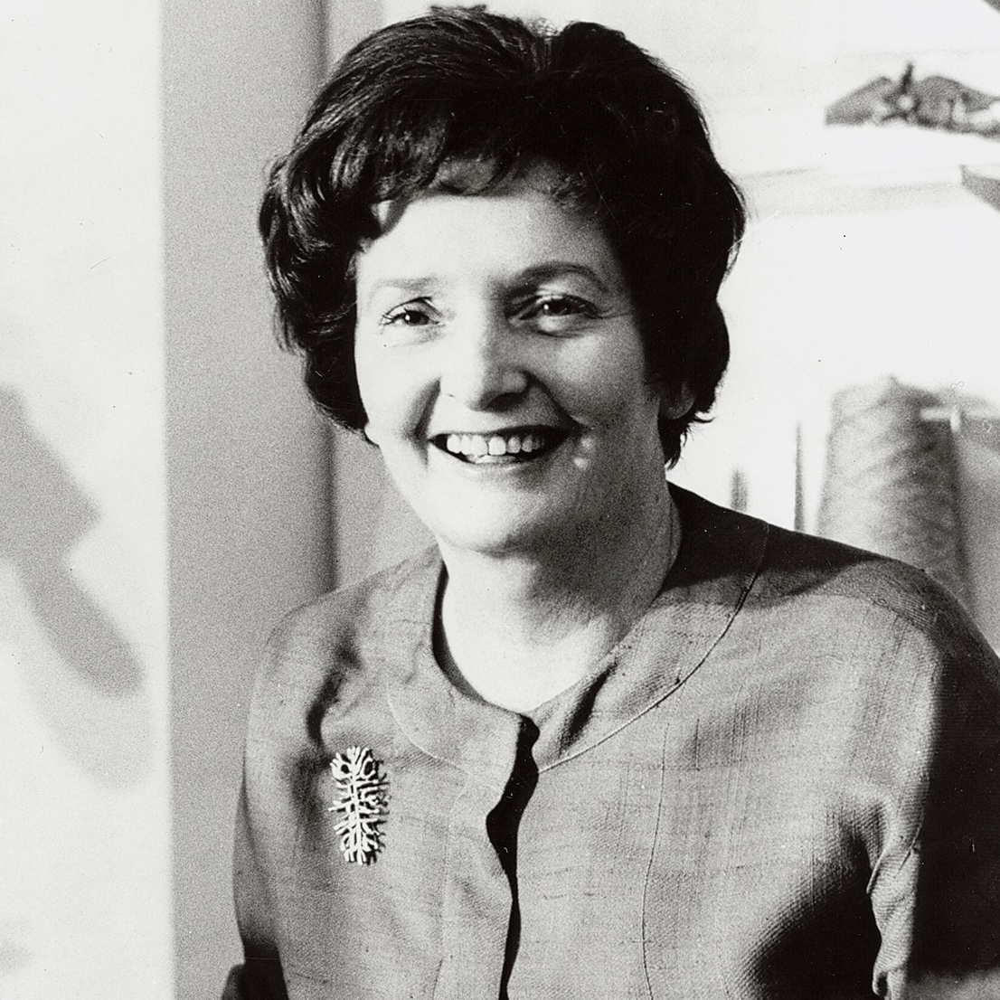
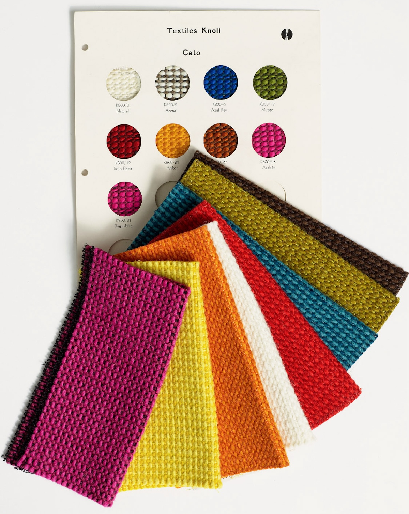
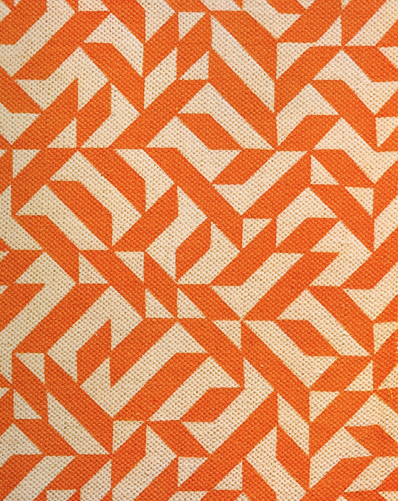

Knoll Textiles was founded in 1947 by Florence Knoll, an American architect, interior designer, and leading figure of modern design who pioneered the concept of integrated architectural and design services.
1930–1960
1930–1960
1930–1960
1930–1960
1938
The Hans G. Knoll Furniture Company is established at East 72nd St. in New York. Hans dedicates himself to bringing the modernist vision to America.
1941
Noémi Raymond
A series of textiles designed by Noémi Raymond are awarded first place prize at MoMA’s Organic Design Competition (though attribution is given solely to Raymond’s architect husband, Antonin). Several designs are later adapted and put into production by Knoll as Chinese Coins (1948), Mosaic (1950), and Reeds and Bars (1948).
After completing her studies in Chicago, Florence Schust moves to New York to work as an architect. While working on an interior design project she meets Hans Knoll, who, recognizing a shared ambition, hires Florence to moonlight on various interior projects for his company.
1946
Florence founds the Knoll Planning Unit and Hans markets Knoll as a complete design service. A revolutionary concept in the furniture industry, the Planning Unit gives Florence the opportunity to control the design of entire spaces.
The CBS Offices by Florence Knoll completed in 1965
The CBS Offices by Florence Knoll completed in 1965
The CBS Offices by Florence Knoll completed in 1965
The CBS Offices by Florence Knoll completed in 1965
Hans Knoll and Florence Schust are married. The Hans G. Knoll Furniture Company becomes Knoll Associates, signaling the beginning of a new era of ambition and growth.
Early Collaborators
Scroll to see more→
Marianne Strengell
Born to an architect father and interior designer mother, Marianne Strengell was surrounded by color, texture and design from a young age.
Eszter Haraszty
Upon Marcel Breuer’s recommendation, Hans hires Eszter Haraszty to head the textiles department.
While she introduced many textiles to the collection, Haraszty’s real contribution was as a colorist. She was responsible for designing the color schemes for the Planning department and was known for bold and unexpected combinations like orange and pink. She is also credited with introducing the first industrial textile — the so-called Transportation Cloth — used widely in Detroit for its unparalleled durability.
Evelyn Hill
Evelyn Hill left her native Oklahoma to study at Black Mountain College in North Carolina under Josef Albers, whom she later cited as having an enormous impact on her work.
Evelyn Hill develops a line of architecturally-inspired handwoven fabrics for KnollTextiles, which debut in 1952.
Anni Albers
In 1951, Florence Knoll invited Albers to collaborate with the Knoll Textiles Department. This initial contact would lead to a 30 year relationship through which Albers would bring her stylistic innovation to Knoll, helping to direct and define the company’s ever-evolving identity. Introduced in 1976 and her best known pattern, Eclat, exemplifies Albers’s design philosophy — to ground designs in order, but not in an overly apparent manner.

Suzanne Huguenin
Suzanne Huguenin, who began as Eszter Haraszty’s assistant, succeeds her as the director of Knoll’s textiles department. Huguenin’s major contribution to Knoll and the larger textiles industry is a product called Nylon Homespun.
Sheila Hicks
After studying painting at Yale University, Sheila Hicks began weaving and producing fabrics in Central and South America in the early 1960s. Attracted to her hand-woven aesthetic, Knoll International collaborated with Hicks in 1966 to produce Inca. The woven upholstery design proved highly successful worldwide and has been revived many times since its original introduction.
Paul Maute
After studying painting at Yale University, Sheila Hicks began weaving and producing fabrics in Central and South America in the early 1960s. Attracted to her hand-woven aesthetic, Knoll International collaborated with Hicks in 1966 to produce Inca. The woven upholstery design proved highly successful worldwide and has been revived many times since its original introduction.

1961
Cato and Arno
Weaver Paul Maute designs his first textiles for Knoll after producing fabrics for the company in his weaving workshop since the 1950s.
1965
After more than 20 years of continuous innovation and industry leadership, Florence Knoll Bassett retires from the company.
“She had that ability, to critique [something], to tear it apart and put it back together. She was something else.” —Bob Longwell
1974
Eclat
Knoll introduces Eclat by world renowned textile designer Anni Albers. Albers’ design philosophy is to ground the pattern with order but not in an obvious manner.

Eclat by Anni Albers
1/2→
1976
Knoll introduces its first textile engineered for use on panel office systems, specifically the Stephens System, launched in 1971.
1983
Jhane Barnes
Jhane Barnes becomes the first fashion designer to produce textiles for Knoll. Her Jhane Barnes Collection is based on fabrics she had developed for a recent series of men’s sport coats, and incorporate luxurious fibers like silk and linen, materials associated more with garments than with contract textiles.
1990
Hazel Siegel’s prodigious debut collection of contract textiles sees the launch of over 30 new mini-collections produced in a total of 430 colorways. At 900 unique products, this is the largest single release in Knoll’s history, and a feat not since repeated within the contract industry.
Contemporary Collaborators
Scroll to see more→
2x4
Founded in 1994, 2x4, Inc. is a global design consultancy founded by Michael Rock, Susan Sellers, and Georgianna Stout, and headquartered in New York City. With a design-forward focus on brand strategy, the firm’s varied work includes content development, architecture, environmental design, and graphic media for art, architecture, fashion, and cultural clients. Their clients include Apple, Nike, the Museum of Modern Art in New York, Harvard University, Prada, and Sotheby’s.
Founded in 1994, 2x4, Inc. is a global design consultancy founded by Michael Rock, Susan Sellers, and Georgianna Stout, and headquartered in New York City. With a design-forward focus on brand strategy, the firm’s varied work includes content development, architecture, environmental design, and graphic media for art, architecture, fashion, and cultural clients. Their clients include Apple, Nike, the Museum of Modern Art in New York, Harvard University, Prada, and Sotheby’s.
Rodarte (founded 2005) is a Los Angeles-based multidisciplinary design brand. Founded by Kate and Laura Mulleavy, the brand’s runway collections are distinguished for their craftmanship, exquisite/precise/flamboyant/florid detailing, and wide-ranging references.
Proenza Schouler (founded 2002) is a New York-based womenswear and accessories brand founded by Jack McCollough and Lazaro Hernandez. Named after McCollough and Hernandez’s mothers’ maiden names, Proenza Schouler began when the designers met as students at Parsons School of Design and is recognized for its use of fine materials infused with a sense of effortlessness and ease. The brand has received numerous awards since its inception, including five CFDA Fashion Awards and has collaborated with brands including L’Oreal, Birkenstock, and Mercedes-Benz. Proenza Schouler has a flagship boutique in New York and is sold in over 350 stores worldwide, including Bergdorf Goodman, Saks Fifth Avenue, Harrods, Galeries Lafayette, and Printemps.
SUNO (2008–2017) was a womenswear label led by Max Osterweis and Erin Beatty. Working with artisans in Kenya, India, Peru, and New York, SUNO designed garments that layered unique prints, textures, and embroidery for a fresh and optimistic range.
Trove (founded 2006) is New York-based wallpaper studio that merges art, design, and craft. Led by artists Jee Levin and Randall Buck, the studio envisions pattern at an architectural scale, designing wallpapers with depth and perspective. Trove’s designs have won several awards and are included in the permanent collections of the Cooper Hewitt National Design Museum and the Brooklyn Museum.
Alejandro Cardenas (b. 1977, Chile) is a New York-based multimedia artist and designer whose varied body of work spans textiles, illustration, graphic design, and videography. Since completing his BFA at the Cooper Union School of Art (New York) in 2000, he has served as the lead textile designer and art director for high-end fashion label Proenza Schouler and was a founding member of Lansing-Dreiden, a New York-based art collective that produced musical albums, a literary journal, and artworks. Drawing from a range of influences from Surrealism to science fiction, his paintings and sculptures explore his vision of the relationship between human forms and the environment.
Abbott Miller (b. 1963, United States) is a designer, editor, and art director. After graduating from the Cooper Union School of Art in New York with a degree in graphic design, he founded the multidisciplinary studio Design/Writing/Research in 1989 and has been a partner at the international design consultancy Pentagram’s New York office since 1999. His clients have included the Guggenheim, Harley-Davidson, and Knoll. Miller’s projects often center on the relationship between design and the written word and at Pentagram, he leads a team that focuses on the design of books, magazines, catalogs, identities, and various editorial projects. A survey of his design work, Abbott Miller: Design and Content, was published by Princeton Architectural Press in 2014.
Kari Pei is a New York-based textile designer specializing in blending art, design, and sustainability. An artist by training, Pei has worked at design companies including Maharam, Wolf-Gordon, Interface, and KEP Textile Atelier.